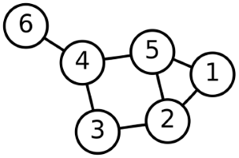

Data Science as 9 problems
DSTA
A gentle-yet-focussed introduction

- (was 2) Regression/value estimation
Instance:
a collection (dataset) of numerical \(<\mathbf{x}, y>\) datapoints
a regressor (independent) value \(\mathbf{x}\)
Solution: a regressand (dependent) value \(y\)
that complements \(\mathbf{x}\)
Measure: error over the collection
- (was 1) Classification and class probability
Instance:
a collection (dataset) of datapoints from \(\mathbf{X}\)
a classification system \(C = \{c_1, c_2, \dots c_k\}\)
Solution: classification function \(\gamma: \mathbf{X} \rightarrow C\)
Measure: misclassification
[PF] “classification predicts whether something will happen, whereas regr. predicts how much something will happen.”

- Similarity
Identify similar individuals based on data known about them.
Instance:
a collection (dataset) of datapoints from \(\mathbf{X}\), e.g., \(\mathbb{R}^n\)
(distance functions for some of the dimensions)
Solution: similarity function \(\sigma: \mathbf{X} \rightarrow \mathbb{R}\)
[Measure: error]

- Clustering (segmentation)
group individuals in a population together by their similarity (but not driven by any specific purpose)
Instance:
a collection (dataset) \(\mathbf{D}\) of datapoints from \(\mathbf{X}\), e.g., \(\mathbb{R}^n\)
a relational structure on \(\mathbf{X}\) (a graph)
a small integer \(k\)
Solution: a partition of \(\mathbf{D}\) into \(\mathcal{C_1}, \dots \mathcal{C_k}\)
Measure: network modularity Q: proportion of the relational structure that respects the clusters.
Detection version: \(k\) is part of the output.
- Co-occurence (frequent itemset mining)
similarity of objects based on their appearing together in transactions.
Instance:
a collection (dataset) \(\mathbf{T}\) of itemsets (subsets of \(\mathbf{X}\)) or sequences
a theshold \(\tau\)
Solution: All frequent patterns: subsets that appear in \(\mathbf{T}\) above \(\tau\)
Detection version: \(\tau\) is part of the output.
Market-basket analysis, (some) recommendation systems
- Profiling (behaviour description)
Instance:
a user description \(\mathbf{u}\) drawn from a \(\mathbf{D}\) collection
a stimulus \(a\in \mathbf{A}\)
a set of possible responses \(\mathbf{R}\)
Solution: a functional reaction of u to a, i.e., \(\rho: \mathbf{U} \times \mathbf{A} \rightarrow \mathbf{R}\)
Application: anomaly/fraud detection.
Example research work on Social media profiling
- Link prediction
Instance: a dynamical graph (network) \(\mathbf{G}\) , i.e., a sequence
\(<V, E>\),
\(<V, E^\prime=E+\{(u,v)\}>\),
\(<V, E^{\prime\prime}=E^\prime+\{(r,s)\}>\dots\)

Question: what is the next link to be created?
What YouTube video will you watch next?
Alternatives: predict the strength of the new link; link deletion.
- Data reduction
Instance:
a collection (dataset) \(\mathbf{D}\) of datapoints from \(\mathbf{X}\), e.g., \(\mathbb{R}^m\)
[a distinct independent variable \(x_i\)]
Solution: a projection of \(\mathbf{D}\) onto \(\mathbb{R}^n\), \(n < m\)
Measure: error in the estimation of \(x_i\)
Example: genre identification in consumer behaviour analysis
- Causal modelling
Instance:
a collection (dataset) \(\mathbf{D}\) of datapoints from \(\mathbf{X}\), e.g., \(\mathbb{R}^m\)
a distinct dependent variable \(x_i\)
Solution: a variable \(x_j\) of \(\mathbf{D}\) that controls \(x_i\)
Measure: effectiveness of \(x_j\) tuning to tune \(x_i\) in turn.
Example: Exactly What food causes you to put on weight?
Controlled clinical trials, A/B testing.
[Un]Supervision
Supervised Data Science
obtain a dataset of examples, inc. the “target” dimension, called label
split it in training and test data
run a. on the test data, find a putative solution
test the quality/pred. power against test data
Regression involves a numeric target while classification involves a categorical/binary one
Supervised
1: Regression
2: Classification
9: Causal Modelling
Could be either
3: Similarity matching,
7: link prediction,
8: data reduction
(mostly) unsupervised
4: Clustering
5: co-occurrence grouping
6: profiling